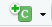

install.packages("rmarkdown")
library(rmarkdown)5 Reproducible research with RMarkdown
5.1 Introduction to RMarkdown
RMarkdown is a tool that is used to author high-quality documents, making it easy to communicate results efficiently. One of the main appeals of RMarkdown is that it is easy to integrate R code and output seamlessly into a document, encouraging openness and reproducibility in research.
There are a number of ways we can use RMarkdown to enhance the research process, such as:
- Generating reports to show the latest findings in a project, combining research output with interpretations. Reports can be automated within RMarkdown, to ensure outputs show the latest data.
- Keeping track of projects as an alternative to a notebook. Documents can include R code and visualisations alongside thoughts and comments on findings so far.
- Creating a collaborative document that can be shared with colleagues. The inclusion of R code in documents provides an audit trail, making it easy to carry out quality assurance and resolve discrepancies in results.
Before we begin working with RMarkdown in RStudio, we must first download and install the rmarkdown package as we would any other package:
5.1.1 Creating an RMarkdown files
RMarkdown files (.Rmd) are created and saved separately to the script files we have been using up to now on the course. To create a new RMarkdown file, either use the drop-down menu, following the File -> New File -> R Markdown… options, or using the  icon and selecting R Markdown….
icon and selecting R Markdown….

When creating a new RMarkdown file, we are given the option to set the title, author and date of the new document. We are also given options to select the type of document, presentation, or Shiny app we would like to create. This does not give a comprehensive list of documents available within RMarkdown and can be changed later. We will discuss output document types in more detail later in the session.
Clicking ‘OK’ on this window will produce an RMarkdown file (.Rmd) with some example code. If we do not want this, there is an option to ‘Create Empty Document’ on the bottom left of the window.
5.1.2 Rmarkdown content
RMarkdown files contain three main types of content:
- A YAML header (this sets the global options for the document)
- Text, or syntax (this includes headings and comments)
- Code chunks containing R code
5.1.2.1 The YAML header
The first part of an RMarkdown script, surrounded by ‘---’ is known as the YAML header. This sets global options for the document that will be produced by the script. YAML headers can include the title, author and date of a document, the output document type, table of contents options, and can include code to edit the appearance of text and figures.
For this course, we will just use the YAML to define the title, author, date, and output of our document:
---
title: "Introduction to R with Tidyverse"
author: My name
date: 2024-07-15
output: html_document
---There are many output document types that can be produced using RMarkdown. Some of the most common include:
html_document:HTML document,.htmlpdf_document: PDF document,.pdf, created using a LaTeX templateword_document: Microsoft word document (.docx)odt_document: OpenDocument text document (.odt), similar to Microsoft Word/Google Docs but compatible with free word processors)github_document: Github document (.md, markdown files that are compatible with Github and are converted to HTML when viewed there)powerpoint_presentation: Powerpoint presentation (.pptx)
RMarkdown can also be combined with other R packages to create books (via bookdown), websites (via blogdown) and interactive dashboards (via flexdashboard).
5.1.2.2 RMarkdown syntax
RMarkdown text, or syntax, will generally make up the majority of a RMarkdown file. This can include headers and subheadings, equations, and any other text or comments in the document. Text is formatted using markdown syntax. A detailed list of syntax commands are given in the RMarkdown cheatsheet. Common syntax commands that may be used in an RMarkdown document include:
*italic***bold**- Add
`code`into text # Header 1## Header 2- …
###### Header 6[This is a link](link url)
- Unordered list
- List with indent1. Ordered list
- With indent
2. Second itemEquation: $r^2 = (x - a)^2 + (y - b)^2$
RMarkdown equations are built using the same language as LaTeX. See here for a list of mathematical symbols that can be used in these equations.
5.1.2.3 Code chunks
Code chunks allow us to embed R code and outputs into our documents. This is one of the main draw of RMarkdown as it removes the need to copy and paste or import results from R into another document.
Code chunks are pieces of code that begin ```{r} and end ```. For example,
```{r}
1 + 1
``` Code chunks can be created by manually typing these wrappers, by clicking the  icon and selecting ‘R’, or using the keyboard shortcut ctrl + alt + i on Windows, and Command + Option + i on Mac.
Code chunks can be given titles to make an RMarkdown script easier to navigate (these will appear under the script window where lists of subheadings appear in script files). These are added inside the opening of the code chunk: ```{r chunk title}.
There are a number of chunk options to customise which code/output to display in the document. These are included in the opening of a chunk, after the title, separated by commas ,. Some of the most common, include:
echo = TRUE/FALSE: whether to display code in the output documenteval = TRUE/FALSE: whether to run the code in the chunk or notinclude = TRUE/FALSE: whether to include anything from the chunk (code or output) in the documenterror/warning/message = TRUE/FALSE: whether to display error/warning/other messages in the document
Top tip: It may be useful to add a setup code chunk at the beginning of an RMarkdown file that loads any packages and datasets that are required for the rest of the document. These can also include universal options for future code chunks to avoid repeating the code, using the knitr::opts_chunk$set function.
For example:
```{r setup, include = FALSE}
# Set global options for code chunks
# Do not show any R code or messages unless specified
knitr::opts_chunk$set(echo = FALSE, message = FALSE)
# Load in the tidyverse package
library(tidyverse)
```5.1.3 Compiling RMarkdown documents
Compiling RMarkdown actually requires multiple steps and programmes. Luckily for us, this process takes place in the background so we don’t need to be aware of these steps happening!
Generating an output file from RMarkdown is know knitting a document. This process sends the .Rmd file to another R package knitr (which is installed alongside rmarkdown), which executes all the code chunks in the document and creates a markdown .md file including the code and output. This markdown file is then processed by another programme pandoc which converts markdown code into the finished document.

To knit an RMarkdown file in RStudio is very simple. Either click the  icon above the RMarkdown script, or use the keyboard shortcut
icon above the RMarkdown script, or use the keyboard shortcut ctrl + shift + k on Windows or Command + shift + k on Mac. This initiates the process above and will return an output document (if there are no errors!) in the requested format to the working directory.
5.1.4 Data visualisation in RMarkdown
Output such as graphs and tables can be embedded in code chunks, the code used to create them will be the same as it would be in any other R script.
Note
Often, when providing output in RMarkdown, we often do not want to show the code that was used to create this. Make sure to add echo = FALSE to the opening of the code chunk.
5.1.4.1 Graphs in RMarkdown
ggplot can be used to create graphs that are embedded within code chunks and included in an output document. For example, we could use the data from previous sections to show the relationship between Settlement Funding Assessment (SFA) and council tax total in English local authorities in 2020, colour code by regions in a scatterplot:
```{r scatterplot sfa_2020 and ct_total_2020 by region, message = FALSE}
# Load and tidy the 2020 data
read_csv("data/CSP_2020.csv") %>%
# Remove the Greater London Authority row
filter(authority != "Greater London Authority") %>%
# Convert region variable to factor
mutate(region_fct = factor(region,
levels = c("L", "NW", "NE", "YH", "WM",
"EM", "EE", "SW", "SE"))) %>%
# Create a ggplot
ggplot() +
# Scatterplot definition
geom_point(aes(x = ct_total_2020, y = sfa_2020, colour = region_fct)) +
# Add colour palette for region
scale_colour_manual(values = c("aquamarine2", "blue", "chartreuse2",
"coral", "orchid", "firebrick",
"gold3", "violetred", "grey50")) +
# Change axis/label titles
labs(x = "Council tax total (£millions)",
y = "Settlement funding assessment (£milliongs)",
colour = "Region") +
theme_light()
```
5.1.4.2 Tables in RMarkdown
There are a number of ways to include tables within RMarkdown which can either be entered manually, or generated using an R package. The choice of approach to creating tables depends on the format and size of the data, the amount of flexibility you would like to customise the output, the type of output document you are creating, and personal preference of how it should look.
In this course, we will look at how tables can be created using RMarkdown syntax (without the need for additional packages), and using the kable function within the knitr package.
Manually creating tables
Tables can be created in RMarkdown syntax, using the | symbol to separate columns, and dashes - to separate column headings from the body of the table. These are created outside of code chunks within the text. For example,
Header 1 | Header 2 | Header 3 |
|----------|----------|----------|
| This | Is | A |
| Very | Simple | Table |produces the following output:
| Header 1 | Header 2 | Header 3 |
|---|---|---|
| This | Is | A |
| Very | Simple | Table |
Colons can be added to the header/body separator row of the table to control the justification of the text in each column. For example,
| Left | Right | Center | Default |
|:-----|------:|:-------:|-----------|
| This | Is | Another | Simple |
| Table | But | It is | Justified |produces the following output:
| Left | Right | Center | Default |
|---|---|---|---|
| This | Is | Another | Simple |
| Table | But | It is | Justified |
Creating tables from data frames
The knitr package that compiles RMarkdown files contains the kable function that can be used to create simple data tables. The kable function requires data to be stored as a matrix, data frame, or tibble object (although these can be easily created using the matrix, data.frame or tibble functions). Accessing the help file ?knitr::kable gives a list of arguments that can be used to customise these tables.
Note
As these tables are created using R functions, they must be generated within a code chunk.
For example, we can create a simple data table using kable showing the first 6 rows of the mtcars dataset (a dataset pre-loaded into base R):
```{r mtcars table, echo = FALSE}
knitr::kable(head(mtcars))
``` which produces the following output:
| mpg | cyl | disp | hp | drat | wt | qsec | vs | am | gear | carb | |
|---|---|---|---|---|---|---|---|---|---|---|---|
| Mazda RX4 | 21.0 | 6 | 160 | 110 | 3.90 | 2.620 | 16.46 | 0 | 1 | 4 | 4 |
| Mazda RX4 Wag | 21.0 | 6 | 160 | 110 | 3.90 | 2.875 | 17.02 | 0 | 1 | 4 | 4 |
| Datsun 710 | 22.8 | 4 | 108 | 93 | 3.85 | 2.320 | 18.61 | 1 | 1 | 4 | 1 |
| Hornet 4 Drive | 21.4 | 6 | 258 | 110 | 3.08 | 3.215 | 19.44 | 1 | 0 | 3 | 1 |
| Hornet Sportabout | 18.7 | 8 | 360 | 175 | 3.15 | 3.440 | 17.02 | 0 | 0 | 3 | 2 |
| Valiant | 18.1 | 6 | 225 | 105 | 2.76 | 3.460 | 20.22 | 1 | 0 | 3 | 1 |
Where data are not already saved as an object, we need to create them first before generating a table. For example, the table we created manually earlier can be recreated using the kable function, by first creating a data frame with the information, and then piping it through to the function:
```{r kable table}
# Create a data frame with the table information
data.frame(col1 = c("This", "Very"),
col2 = c("Is", "Simple"),
col3 = c("A", "Table")) %>%
knitr::kable(., col.names = c("Header 1", "Header 2", "Header 3"))
``` | Header 1 | Header 2 | Header 3 |
|---|---|---|
| This | Is | A |
| Very | Simple | Table |
Other ways to create tables
Although the kable function and RMarkdown syntax tables do not require additional R packages to be installed, they are fairly simple and do not give many options to customise the tables. For a more flexible alternative, I would recommend looking at the flextable package, which gives a much wider range of customisible features. The flextable user manual can be accessed for free from this website.
Exercise 8
Create an RMarkdown file that creates a html report describing the trends in core spending power in English local authorities between 2015 and 2020. Your report should include:
- A summary table of the total spending per year per region
- A suitable visualisation showing how the total annual spending has changed over this period, compared between regions
- A short interpretation of the table and visualisation
Note
You are not expected to be an expert in this data! Interpret these outputs as you would any other numeric variable measured over time.